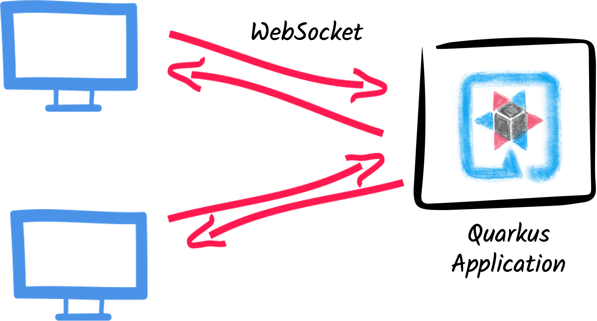
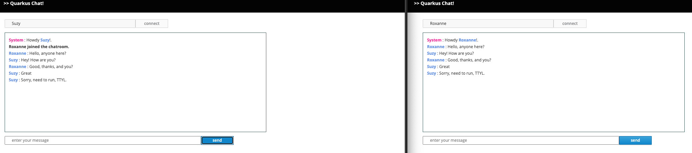

Getting started with WebSockets Next
experimentalThis guide explains how your Quarkus application can utilize web sockets to create interactive web applications. In this guide, we will develop a very simple chat application using web sockets to receive and send messages to the other connected users.
|
Essa tecnologia é considerada experimental. In experimental mode, early feedback is requested to mature the idea. There is no guarantee of stability nor long term presence in the platform until the solution matures. Feedback is welcome on our mailing list or as issues in our GitHub issue tracker. Para obter uma lista completa de possíveis status, consulte nosso FAQ. |
Pré-requisitos
Para concluir este guia, você precisa:
-
Cerca de 15 minutos
-
Um IDE
-
JDK 17+ instalado com
JAVA_HOMEconfigurado corretamente -
Apache Maven 3.9.8
-
Opcionalmente, o Quarkus CLI se você quiser usá-lo
-
Opcionalmente, Mandrel ou GraalVM instalado e configurado apropriadamente se você quiser criar um executável nativo (ou Docker se você usar uma compilação de contêiner nativo)
Quarkus WebSockets vs. Quarkus WebSockets Next
This guide uses the quarkus-websockets-next extension.
This extension is a new implementation of the WebSocket API that is more efficient and easier to use than the original quarkus-websockets extension. The original quarkus-websockets extension is still available and will continue to be supported.
Unlike quarkus-websockets, quarkus-web-socket-next does NOT implement Jakarta WebSocket.
Instead, it provides a simplified and more modern API that is easier to use.
It is also designed to work efficiently with Quarkus' reactive programming model and the Quarkus' networking layer.
What you’ll learn
-
How to use the
quarkus-websockets-nextextension -
How to declare a web socket endpoint
-
How to send and receive messages using web sockets
-
How to broadcast messages to all connected users
-
How to be notified of new connections and disconnections
-
How to use path parameters in web socket URLs
Arquitetura
Neste guia, criamos um aplicativo de bate-papo simples usando soquetes da Web para receber e enviar mensagens a outros usuários conectados.

Solução
Recomendamos que você siga as instruções nas próximas seções e crie o aplicativo passo a passo. No entanto, você pode pular diretamente para o exemplo completo.
Clone o repositório Git: git clone -b 3.15 https://github.com/quarkusio/quarkus-quickstarts.git, ou baixe um arquivo.
The solution is located in the websockets-next-quickstart directory.
Criar o projeto Maven
Primeiro, precisamos de um novo projeto. Crie um novo projeto com o seguinte comando:
Para usuários do Windows:
-
Se estiver usando cmd, (não use barra invertida '\' e coloque tudo na mesma linha)
-
Se estiver usando o Powershell, envolva os parâmetros '-D' entre aspas duplas, por exemplo, '"-DprojectArtifactId=websockets-quickstart"'
This command generates the project (without any classes) and imports the websockets-next extension.
If you already have your Quarkus project configured, you can add the websockets-next extension
to your project by running the following command in your project base directory:
quarkus extension add websockets-next./mvnw quarkus:add-extension -Dextensions='websockets-next'./gradlew addExtension --extensions='websockets-next'Isto irá adicionar o seguinte trecho no seu arquivo de build:
<dependency>
<groupId>io.quarkus</groupId>
<artifactId>quarkus-websockets-next</artifactId>
</dependency>implementation("io.quarkus:quarkus-websockets-next")Declaring a WebSocket endpoint
Our application contains a single class that handles the web sockets.
Create the org.acme.websockets.ChatWebSocket class in the src/main/java directory.
Copy the following content into the created file:
package org.acme.websockets;
import io.quarkus.websockets.next.OnClose;
import io.quarkus.websockets.next.OnOpen;
import io.quarkus.websockets.next.OnTextMessage;
import io.quarkus.websockets.next.WebSocket;
import io.quarkus.websockets.next.WebSocketConnection;
import jakarta.inject.Inject;
@WebSocket(path = "/chat/{username}") (1)
public class ChatWebSocket {
// Declare the type of messages that can be sent and received
public enum MessageType {USER_JOINED, USER_LEFT, CHAT_MESSAGE}
public record ChatMessage(MessageType type, String from, String message) {
}
@Inject
WebSocketConnection connection; (2)
@OnOpen(broadcast = true) (3)
public ChatMessage onOpen() {
return new ChatMessage(MessageType.USER_JOINED, connection.pathParam("username"), null);
}
@OnClose (4)
public void onClose() {
ChatMessage departure = new ChatMessage(MessageType.USER_LEFT, connection.pathParam("username"), null);
connection.broadcast().sendTextAndAwait(departure);
}
@OnTextMessage(broadcast = true) (5)
public ChatMessage onMessage(ChatMessage message) {
return message;
}
}| 1 | Declares the web socket endpoint and configure the path. Note that the path can contain a path parameter: username. |
| 2 | A session scoped bean that represents the connection to the client. It allows sending messages programmatically and retrieve the path parameters. |
| 3 | This method is called when a new client connects. The broadcast = true attribute indicates that the returned message should be sent to all connected clients. |
| 4 | This method is called when a client disconnects. The method uses the WebSocketConnection to broadcast a message to all remaining connected clients. |
| 5 | This method is called when a client sends a message. The broadcast = true attribute indicates that the returned message should be sent to all connected clients. Here, we just returns the received (text) message. |
As you can see, Quarkus handles the web socket lifecycle and message handling using annotations. It also serializes and deserializes messages using JSON automatically.
Um frontend da Web sofisticado
All chat applications need a nice UI, well, this one may not be that nice, but does the work.
Quarkus automatically serves static resources contained in the META-INF/resources directory.
Create the src/main/resources/META-INF/resources directory and copy this index.html file in it.
Executar o aplicativo
Agora, vamos ver nosso aplicativo em ação. Execute-o com:
quarkus dev./mvnw quarkus:dev./gradlew --console=plain quarkusDevEm seguida, abra as duas janelas do navegador em http://localhost:8080/:
-
Digite um nome na área de texto superior (use dois nomes diferentes).
-
Clique em conectar
-
Enviar e receber mensagens

Como de costume, a aplicação pode ser empacotada utilizando:
quarkus build./mvnw install./gradlew buildE executada com java -jar target/quarkus-app/quarkus-run.jar.
Você também pode criar o executável nativo usando:
quarkus build --native./mvnw install -Dnative./gradlew build -Dquarkus.native.enabled=trueConclusion
This short getting started guide has shown you how to create a simple chat application using the quarkus-websockets-next extension.
Learn more about this extension on the dedicated reference guide.